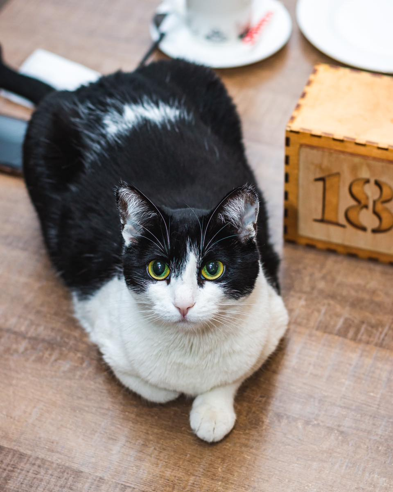
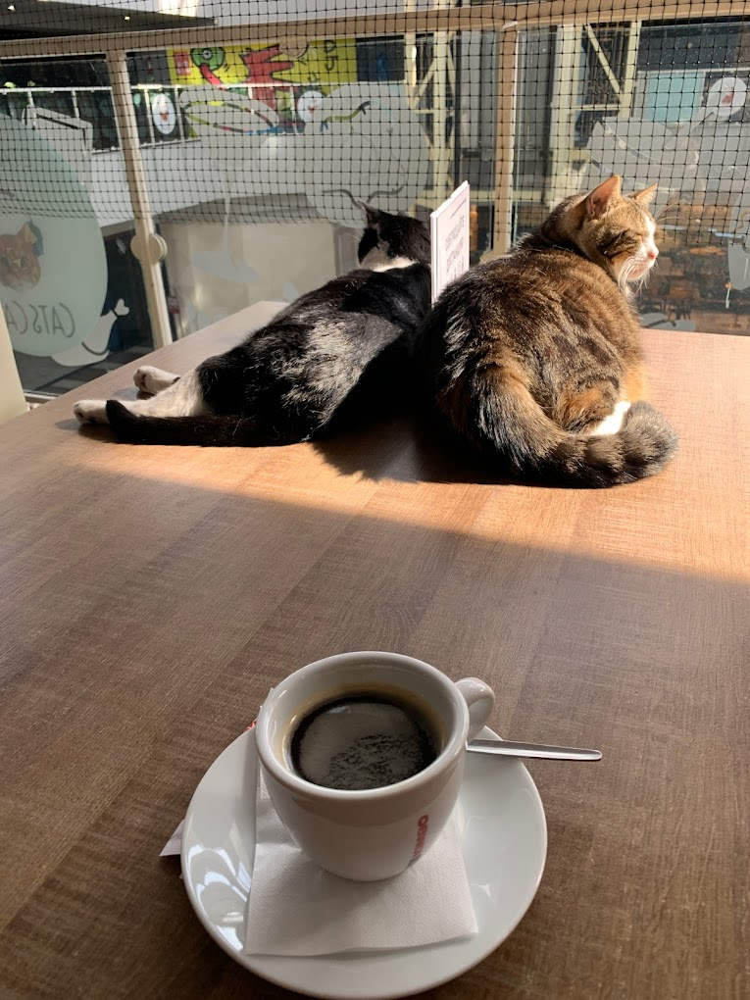
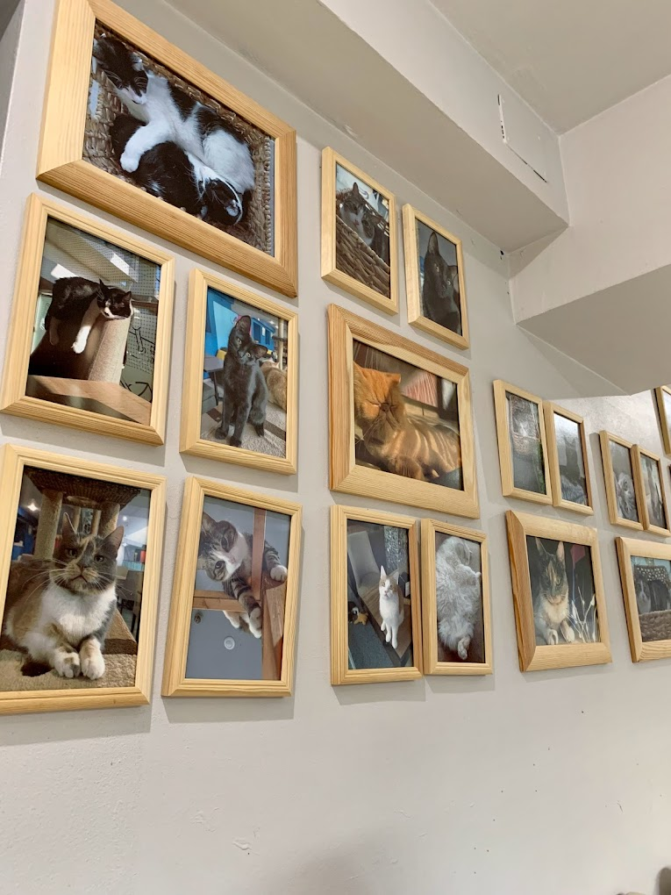
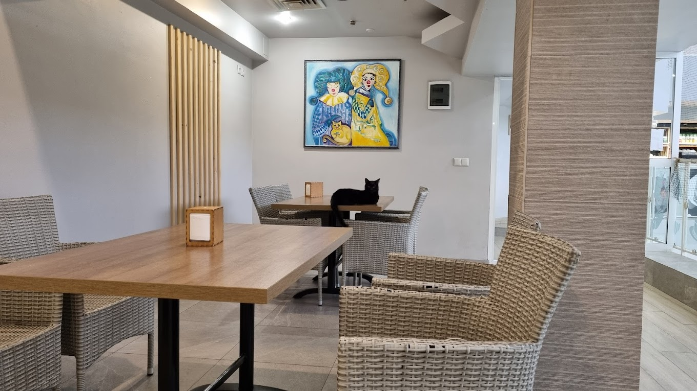
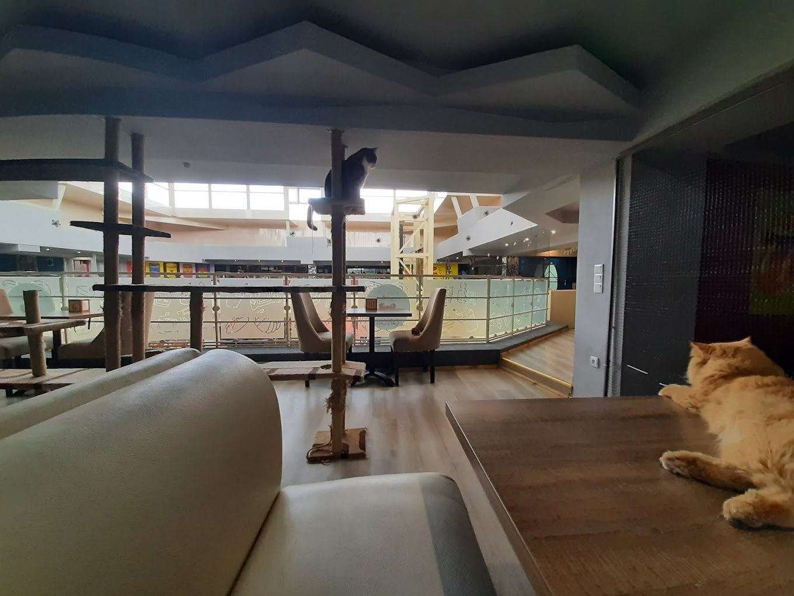
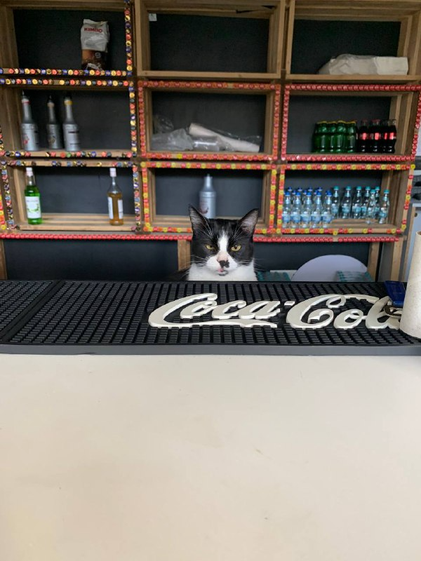

Cine suntem noi?
Cats Café este prima cafenea de tipul ei din Republica Moldova. Deschiși din iarna anului 2018, avem peste 10 pisici
Alături de care oaspeții se pot bucura de o cafea sau să ia masa alături de prietenii noștri pufoși.
Pisicile noastre nu vor ezita să vă viziteze în timpul șederii, oferindu-vă un masaj terapeutic, sau cerându-și binemeritatele mângâieri.





